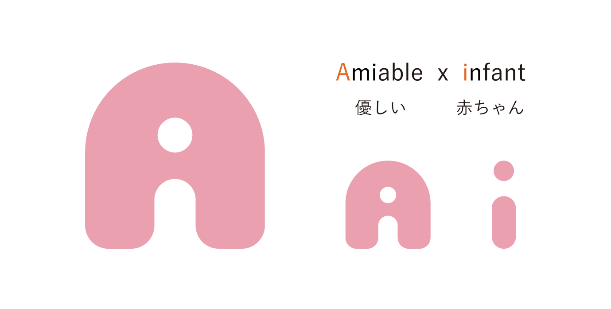
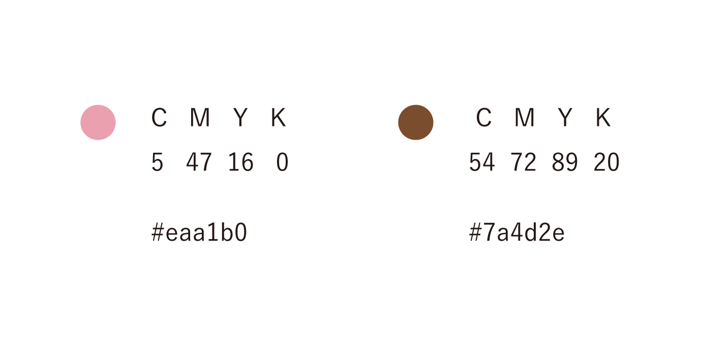
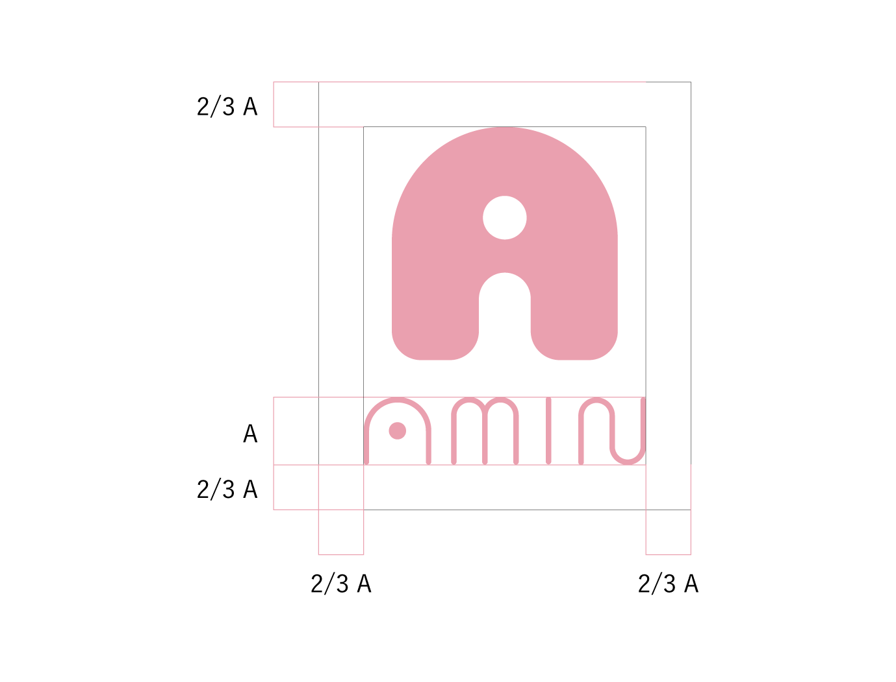
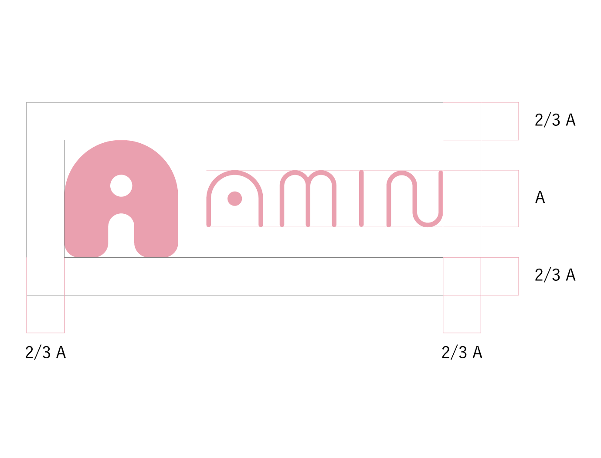
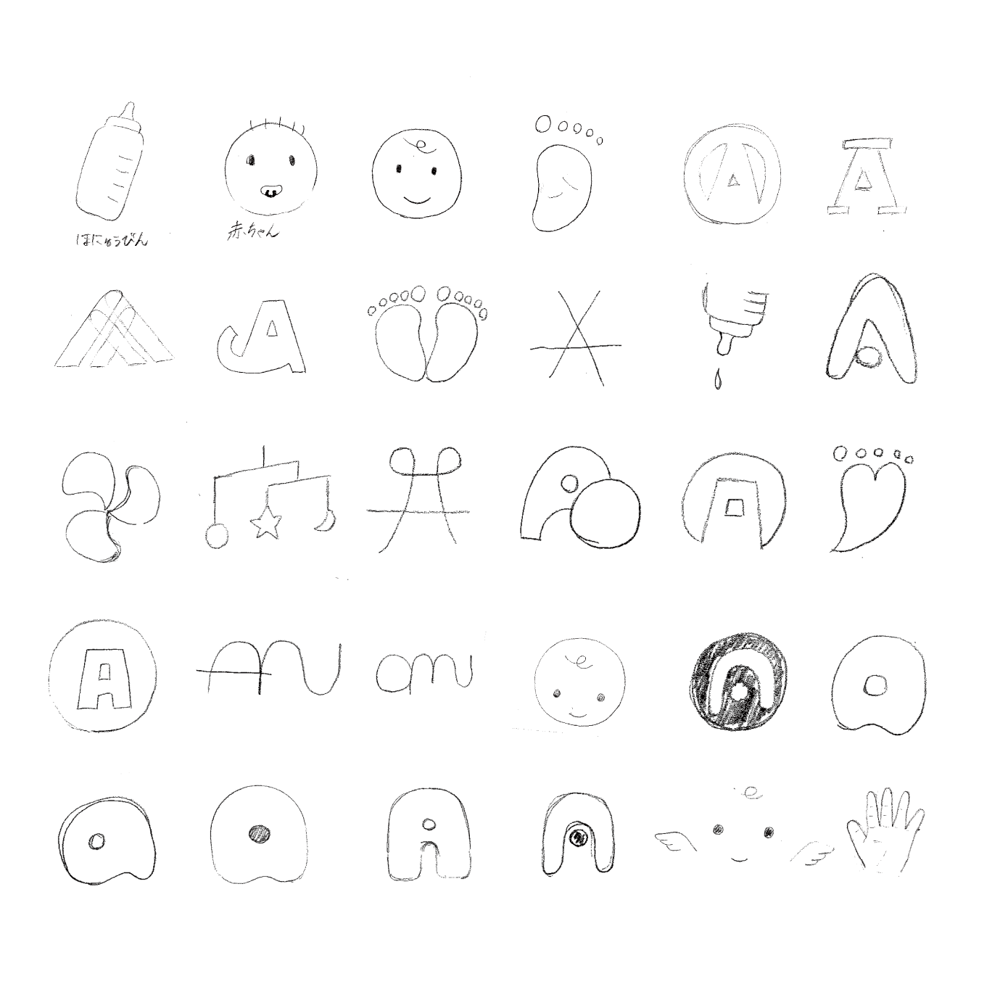
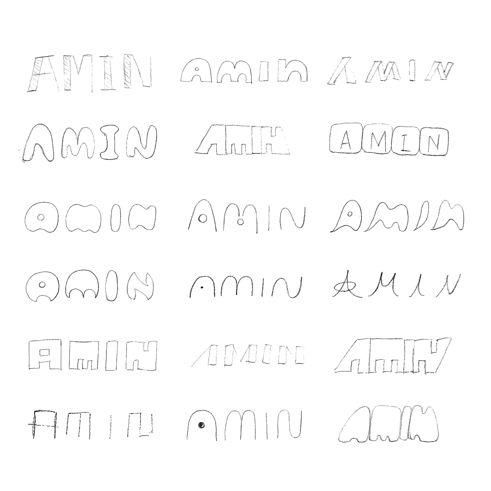
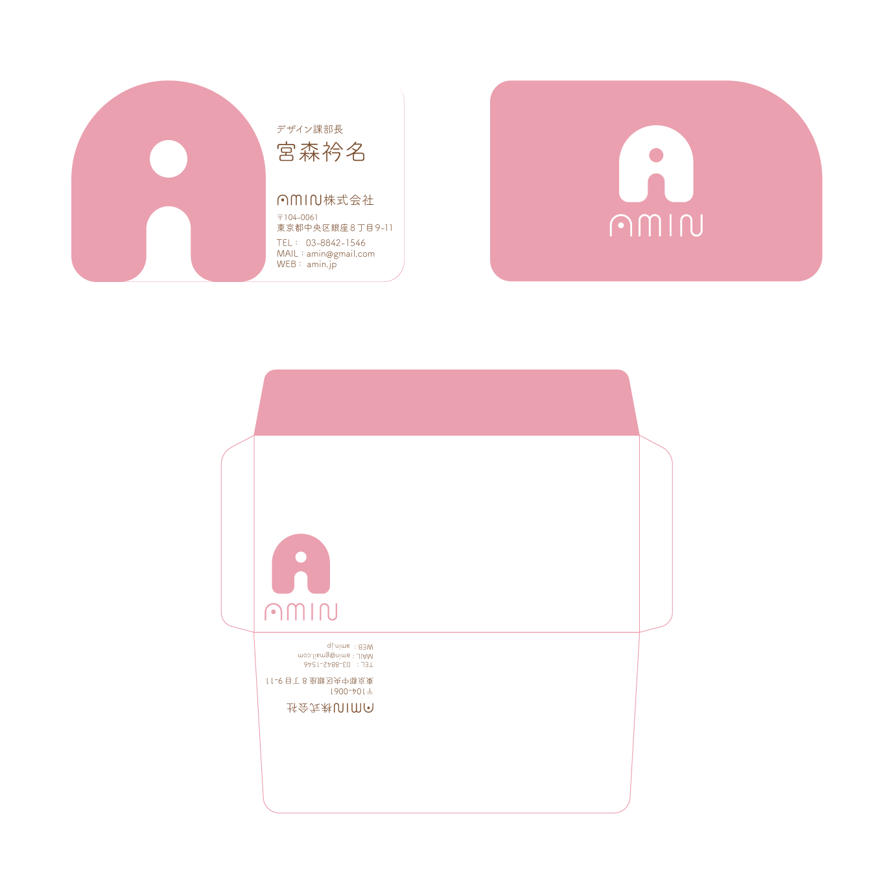
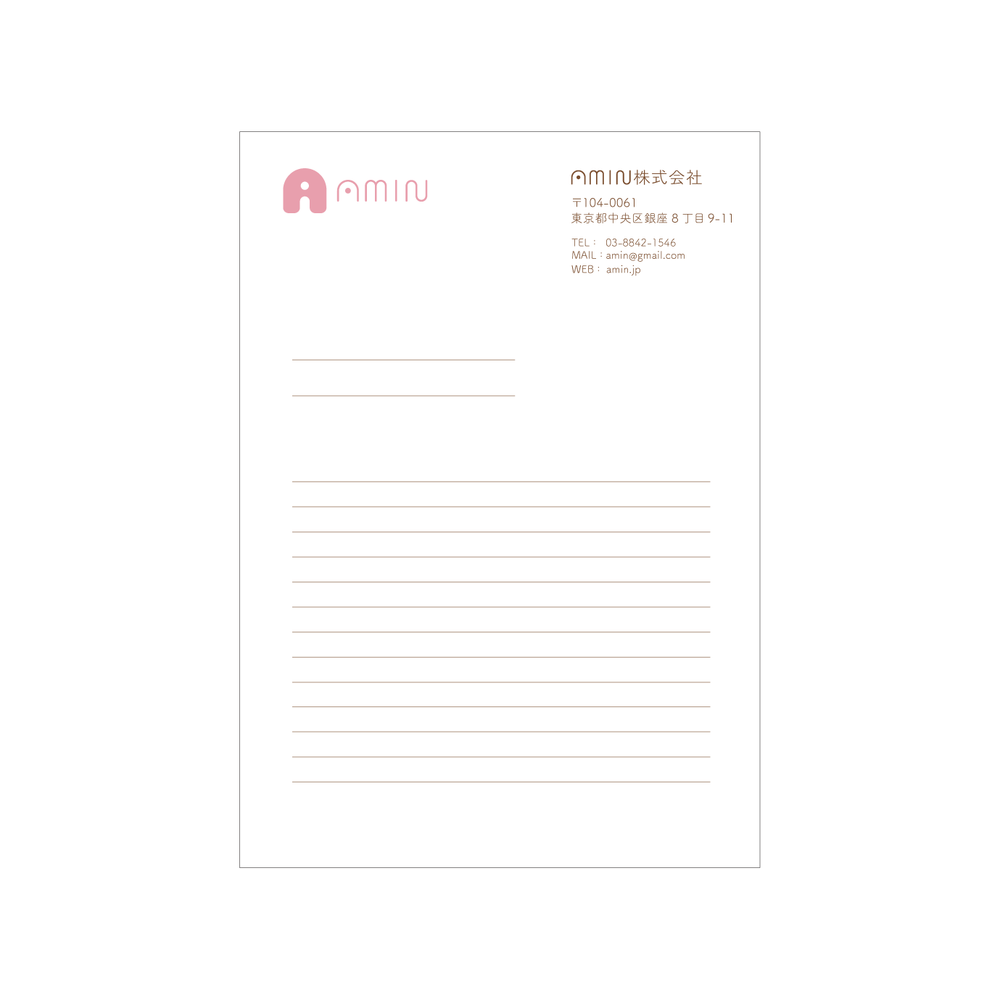

VI計画ロゴデザイン
2019.9
制作環境 illustrator
玩具屋をテーマにオリジナルブランドを考え、アプリケーションデザインやコミュニケーションデザインを展開する課題。
肌に優しく環境に優しい素材を使用した商品を制作することをコンセプトに、
赤ちゃんのための衣服やおもちゃを制作し販売する会社を考えた。
ロゴデザインはキーワードを“優しい・安全・信頼”として考案した。優しい(amiable)と赤ちゃん(infant)を
足してaminという会社名をつけ、それぞれの頭文字が入るシンボルマークと直線と半円が特徴的なロゴタイプを作成した。
名前・カラー


名前・カラー


スケッチ


アプリケーションデザイン

